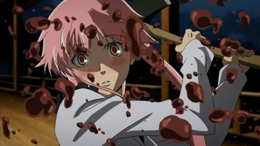

Anime es una palabra de origen francés que significa "animado" o "vivo", adoptada por los japoneses a principios de 1985 para referirse a los dibujos animados para televisión (découpe animé en francés).
Con el rápido crecimiento de los dibujos animados japoneses en la televisión occidental en la década de 1970, la palabra "anime" pasó a utilizarse comúnmente para referirse exclusivamente a los dibujos animados japoneses.
El anime se caracteriza por personajes de dibujos animados que realizan acciones exageradas, normalmente durante una misión.
Historia del anime.
El anime es un género de entretenimiento que ha batido todos los récords en el género audiovisual.
Apareció por primera vez a principios del siglo XX como una forma de referirse al gigante de Disney. El anime ha sido descrito como un anime japonés clásico entre muchas historias populares leídas en manga.
En 1917, el dibujante japonés Junichi Kuchi creó el primer cortometraje de animación. Pero tuvimos que esperar hasta la década de 1960 para disfrutar del arte original de alta calidad y los efectos futuristas de producciones de clase mundial como Ghostbusters o Messenger Z. Port.
En Nobriembre del año pasado (2022), estos eran los animes más vistos mundialmente:
Anime
Población Espectadora
Naruto
27%
Dagon Ball
22%
One Piece
12%
Attack on Titan
11%
Death Note
7%
Pokemón
4%
Sword Art
3%
Fullmetal Alchemist
2%
Sailor Moon
1%
Detective Conan
1%
¿Qué tipos de anime hay?.
El anime suele tener los géneros más grandes e importantes, dentro de los cuales se pueden desarrollar diferentes subgéneros. Los géneros de anime más populares son: acción, aventura, comedia, ciencia ficción, romance y terror. Aunque aquí nos enfocaremos más en esos subgéneros explicando las características de cada una.
Shonen
Este género está destinado a público jóven como adolescentes (mayormente del género masculino) entre 12 y 18 años. La trama suele ser del protagonista tratando de alcanzar su más grande sueño y hacerse el mejor protegiendo a todos sus seres queridos; a veces ayudandose con transformaciones o simplemente con su mayor esfuerzo.
Dentro del mismo podemos encontrar otros subgéneros como deportes, fantasía, ciencia ficción, entre otros.
Ejemplos de este son animes como "One Piece", "Dragon Ball", "My Hero Academia", "Bleach", entre otros.
Shoujo
Este género está destinado a público joven (mayormente femenino) entre los 12 y 18 años de edad. Es casi los mismo que el Shonen solo que el protagonista suele ser mujer y la trama se centra en ella y en sus mejores amigas luchando contra el enemigo con el poder de la amistad (también pueden mostrar intereses amororsos de la misma). Dentro de este género encontramos el de el magical girls, el slice of life, entre otros.
Ejemplos de este son animes como "Sailor Moon", "Toradora", "Nana", "Fruits Basket", entre otros.
Kodomo
Este género va dirigido a público infante de 4 a 10 años de edad. Los diseños de personajes y paisajes en las obras de Kodomo suelen ser muy coloridos, divertidos y simples. Su tono debe atraer a los niños pequeños y su forma debe ser cómoda para ellos. Además, los colores y las texturas suelen combinarse, por lo que es fácil para el público comprender la personalidad de cada personaje; se consideran las diferencias más obvias, por ejemplo, los personajes que representan todos los valores y creencias aparecen en colores brillantes o cálidos, mientras que los villanos los muestran en colores oscuros.
Animes como "Pokémon", "Digimon", "Doraemon" y "Heidi" tienen este género
Seinen
Está dirigido a público adulto masculino de entre 18 y 40 años. Trata muchos temas como el sexo, la violencia, las drogas, los trastornos mentales o psicológicos que no ves en otros géneros de anime que se transmiten en televisión; eso si, también puede haer comedia ya que no todo va a ser drama en la vida del público adulto.
Animes con este género son "Death Note", "Devilman Crybaby", "Monster", "Psycho-Pass", entre otros.
Hentai
La mayoria de la gente (si no es que toda) ya conoce este género sin saberlo por memes. Es de contenido sexual entre hombre y mujer para público adulto y es el más buscado e importante a nivel mundial.
Ejemplos de este son "Boku to Misaki-sensei", "Eroge H", "Mankitsu Happening", "Baka na Imouto", entre otros.
Yaoi
Yaoi significa "amor de chicos" y se centra en el amor y el afecto entre personajes masculinos. En algunos animes puedes encontrar chicos besándose, pero lo especial de este anime es que toda la trama gira en torno a eso. Uno de sus subgéneros es el shonen-ai, que explora la relación entre dos niños que se expresan amor, pero sobre todo de forma platónica.
Ejemplos de ese género son los animes "Given", "Banana fish", "Yuri!! On Ice", "Sasaki to Miyano", entre otros.
Yuri
El Yuri es casi lo mismo que el Yaoi, solo que las protagonistas son mujeres. La versión más madura y explícita es el de shojou-ai, donde muchas chicas jóvenes comienzan a salir y gustarse; la diferencia, como era de esperar, es que los personajes principales de el mismo son mayores y tienen lazos emocionales mucho más fuertes.
Ejemplos de este son "Konohana Kitan", "Happy Sugar Life", "Akuma No Riddle", "Sakura Trick", entre otros.
Gore

El significado literal de Gore es "sangre", por lo tanto esta es la característica del género. En éste se encuentran escenas violentas bastantes gráficas y vicerales y por obvias razones va dirigido a público adulto por la explicidad de los sucesos.
En los ultimos años a subido su popularidad a una velocidad impresionante. Ejemplos de éste son los animes "Chaisaw Man", "Parasyte", "Tokyo Ghoul", "Another", entre otros.